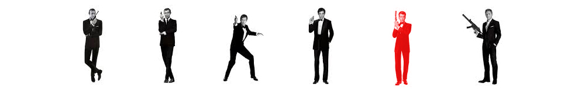
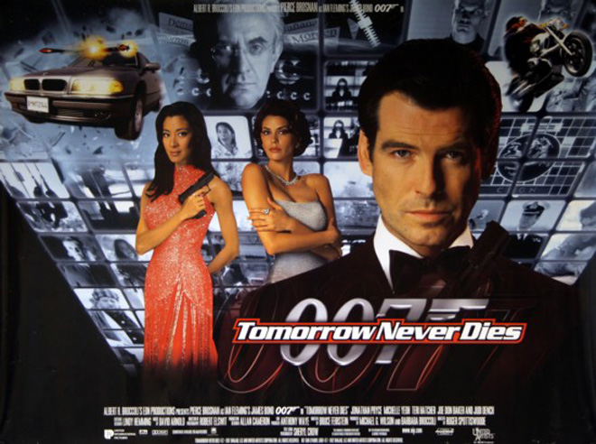
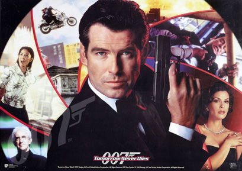
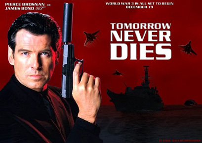
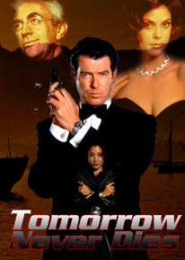
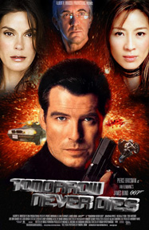
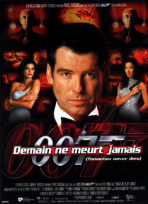

Barbara Broccoli
Nicholas Meyer (uncredited)
Daniel Petrie Jr. (uncredited)
Dominique Fortin
United Artists
United International Pictures (International)
Julian Fellowes
MI6 sends James Bond into the field to spy on a terrorist arms bazaar on the Russian border. Despite M's insistence on letting 007 finish his reconnaissance, British Admiral Roebuck orders the frigate HMS Chester to fire a missile at the bazaar. Bond then discovers two nuclear torpedoes mounted on an L-39 Albatros, and is forced to pilot the L-39 away seconds before the bazaar is destroyed.
Media baron Elliot Carver begins his plans to use an encoder obtained at the bazaar by his henchman, cyber-terrorist Henry Gupta, to provoke war between China and the UK. Intercepting and rebroadcasting ("meaconing") the GPS signal using the encoder, Gupta sends the British frigate HMS Devonshire off-course into Chinese-held waters in the South China Sea, where Carver's stealth ship, commanded by Mr. Stamper, sinks it and steals one of its missiles, while shooting down a Chinese J-7 fighter jet and killing off the HMS Devonshire's survivors with Chinese weaponry. The British Minister of Defence orders Roebuck to deploy the British fleet to recover the frigate, and possibly retaliate, leaving M only 48 hours to investigate its sinking and avert a war.
M sends Bond to investigate Carver after he releases news articles about the crisis hours before MI6 had learned of it. Bond travels to Hamburg and seduces Carver's wife, Paris, who is also Bond's ex-girlfriend, to get information that would help him enter Carver's newspaper headquarters. He defeats three of Stamper's men, cuts Carver off the air during the inaugural broadcast of his satellite network, and steals back the GPS encoder; Carver orders Paris and Bond killed. Carver's assassin Dr. Kaufman kills Paris, but Bond kills Kaufman and escapes, protecting the encoder.
At a U.S. Air Force base in Okinawa, Bond learns that the encoder had been tampered with, and goes to the South China Sea to investigate the wreck (which was actually in Vietnamese waters). He and Wai Lin, a Chinese agent on the same case, explore the sunken ship and discover one of its cruise missiles missing, but are captured by Stamper and taken to the CMGN tower in Saigon. They soon escape and decide to collaborate on the investigation. The two contact the Royal Navy and the People's Liberation Army Air Force to explain Carver's scheme; Carver plans to destroy the Chinese government with the stolen missile, allowing a Chinese general to step in and stop war between Britain and China, although not before both sides destroy each other at sea; once the war is over, Carver will be given exclusive broadcasting rights in China for the next century. Finding Carver's stealth ship in Ha Long Bay, they board it to prevent him from firing the missile at Beijing.
During the attempt, Wai Lin is captured, forcing Bond to devise a second plan. Bond captures Gupta to use as his own hostage, but Carver kills Gupta, claiming he has "outlived his contract." Bond detonates an explosive which damages the ship, rendering it visible to the Chinese and British navies' radars, and thus making it vulnerable to a subsequent Royal Navy attack. While Wai Lin disables the engines, and is recaptured by Stamper, Bond kills Carver with his own sea drill and attempts to destroy the warhead with detonators, but Stamper attacks him, sending a chained Wai Lin into the water. Bond traps Stamper in the missile firing mechanism and saves Wai Lin as the missile explodes, destroying the ship and killing Stamper. Bond and Wai Lin share a romantic moment amidst the wreckage as the HMS Bedford searches for them.
Teri Hatcher was three months pregnant when shooting started, although her publicist stated the pregnancy did not affect the production schedule. Hatcher later regretted playing Paris Carver, saying "It's such an artificial kind of character to be playing that you don't get any special satisfaction from it." Actress Sela Ward auditioned for the role, but lost out, reportedly being told the producers wanted her, but ten years younger. Hatcher was seven years Ward's junior. According to Brosnan, Monica Bellucci also screen tested for the role but as Brosnan remarked, "the fools said no." Daphne Deckers, who portrays the PR Lady, also confirms that she saw Belluci the same day she herself auditioned. Bellucci would later go on to play a role in the 24th Bond film, Spectre.
The role of Elliot Carver was initially offered to Anthony Hopkins (who also had been offered a role in GoldenEye), but he declined in favour of The Mask of Zorro.
Natasha Henstridge was rumoured as cast in the lead Bond Girl role, but eventually, Yeoh was confirmed in that role. Brosnan was impressed, describing her as a "wonderful actress" who was "serious and committed about her work". She reportedly wanted to perform her own stunts, but was prevented because director Spottiswoode ruled it too dangerous and prohibited by insurance restrictions.
When Götz Otto was called in for casting, he was given twenty seconds to introduce himself; his hair had recently been cropped short for a TV role. Saying, "I'm big, I'm bad and I'm German", he did it in five.
Following the success of GoldenEye in reviving the Bond series, there was pressure to recreate that success in the film's follow-up production. This pressure came from MGM along with its new owner, billionaire Kirk Kerkorian, both of whom wished for the film's release to coincide with their public stock offering. Co-producer Michael G. Wilson also expressed concern regarding the public's expectations subsequent to the success of GoldenEye, commenting: "You realize that there's a huge audience and I guess you don't want to come out with a film that's going to somehow disappoint them." This was the first Bond film to be made after the death of Albert R. Broccoli, who had previously been involved with the series' production since its beginning. The rush to complete the film drove the budget to $110 million. The producers were unable to persuade Martin Campbell, the director of GoldenEye, to return; his agent said that "Martin just didn't want to do two Bond films in a row." Instead, Roger Spottiswoode was chosen in September 1996. Spottiswoode said he had previously offered to direct a Bond film while Timothy Dalton was still in the leading role.
The title was inspired by the Beatles' song "Tomorrow Never Knows". The eventual title came about by accident: one of the potential titles was Tomorrow Never Lies (referring to the Tomorrow newspaper in the plot) and this was faxed to MGM. But through an error this became Tomorrow Never Dies, a title which MGM found so attractive that they insisted on using it. The title was the first not to have any relation to Fleming's life or work.
Second unit filming began on 18 January 1997 with Vic Armstrong directing; they filmed the pre-credits sequence at Peyresourde Airport in Peyragudes, in the French Pyrenees, and moved on to Portsmouth to film the scenes where the Royal Navy prepares to engage the Chinese. The main unit began filming on 1 April. They were unable to use the Leavesden Film Studios, which they had constructed from an abandoned Rolls-Royce factory for GoldenEye, as George Lucas was using it for Star Wars: Episode I – The Phantom Menace, so instead they constructed sound stages in another derelict industrial site nearby. They also used the 007 Stage at Pinewood Studios. The scene at the "U.S. Air Base in the South China Sea" where Bond hands over the GPS encoder was actually filmed in the area known as Blue Section at RAF Lakenheath. The sea landing used the vast tank built for Titanic in Rosarito, Baja California, Mexico. The MH-53J in the film was from the US Air Force's 352d Special Operations Group at RAF Mildenhall. Some scenes were planned to be filmed on location in Ho Chi Minh City, Vietnam, and the production had been granted a visa. This was later rescinded, two months after planning had begun, forcing filming to move to Bangkok, Thailand. Bond spokesman Gordon Arnell claimed the Vietnamese were unhappy with crew and equipment needed for pyrotechnics, with a Vietnamese official saying it was due to "many complicated reasons". Two locations from previous Bond films were used: Brosnan and Hatcher's love scene was filmed at Stoke Park, which had been featured in Goldfinger, and the bay where they search for Carver's stealth boat is Phang Nga Bay, Thailand, previously used for The Man with the Golden Gun.
Spottiswoode tried to innovate in the action scenes. Since the director felt that after the tank chase in GoldenEye he could not use a bigger vehicle, a scene with Bond and Wai Lin on a BMW motorcycle was created. Another innovation was the remote-controlled car, which had no visible driver – an effect achieved by adapting a BMW 750i to put the steering wheel on the back seat. The car chase sequence with the 750i took three weeks to film, with Brent Cross car park being used to simulate Hamburg – although the final leap was filmed on location. A stunt involving setting fire to three vehicles produced more smoke than anticipated, causing a member of the public to call the fire brigade. The upwards camera angle filming the HALO jump created the illusion of having the stuntman opening its parachute close to the water.
During filming, there were reports of disputes on set. The Daily Mail reported that Spottiswoode and Feirstein were no longer on speaking terms and that crew members had threatened to resign, with one saying "All the happiness and teamwork which is the hallmark of Bond has disappeared completely." This was denied by Brosnan who claimed "It was nothing more than good old creative argy-bargy", with Spottiswoode saying "It has all been made up...Nothing important really went wrong." Spottiswoode did not return to direct the next film; he said the producers asked him, but he was too tired. Apparently, Brosnan and Hatcher feuded briefly during filming due to her arriving late onto the set one day. The matter was quickly resolved though and Brosnan apologised to Hatcher after realising she was pregnant and was late for that reason.
Tomorrow Never Dies marked the first appearance of the Walther P99 as Bond's pistol. It replaced the Walther PPK that the character had carried in every Eon Bond film since Dr. No in 1962, with the exception of Moonraker in which Bond was not seen with a pistol. Walther wanted to debut its new firearm in a Bond film, which had been one of its most visible endorsers. Previously the P5 was introduced in Octopussy. Bond would use the P99 until Daniel Craig reverted to the PPK as 007 in Quantum of Solace in 2008.




